发生在帝都北京的“7-21暴雨”已经一星期了，朝廷的真理部一如既往地封杀国内媒体的有关报道。所以，本周分享一些文章和照片，既让大伙儿更了解此事，也顺便往朝廷的脸上抹黑。
分享一些网上找来的照片。（以下照片，如有侵权，敬请告知）
广渠门可是帝都的闹市区。7月21日当天，这里水深4米。来自江苏的丁先生就在这儿被淹死。某网友讽刺道:
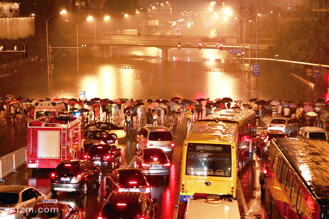
（路人望洋兴叹）
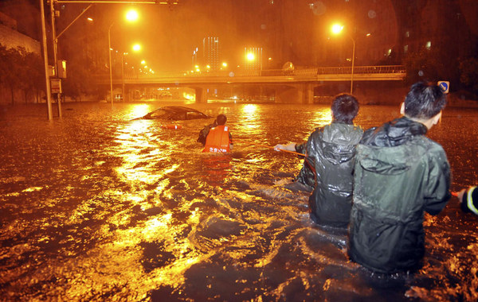
（消防队员在拖车）
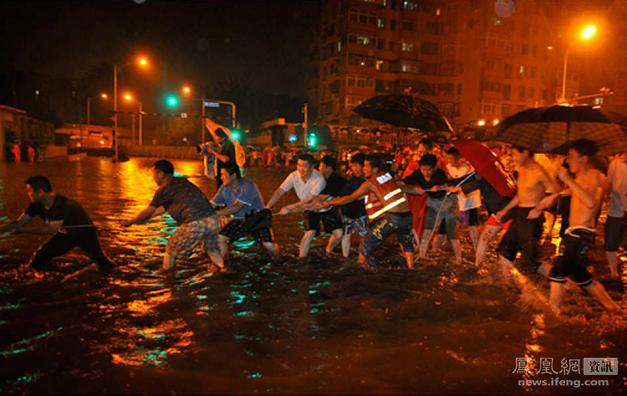
（北京市民帮忙拖车）
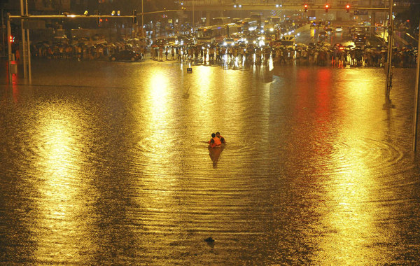
（深水中的消防队员）
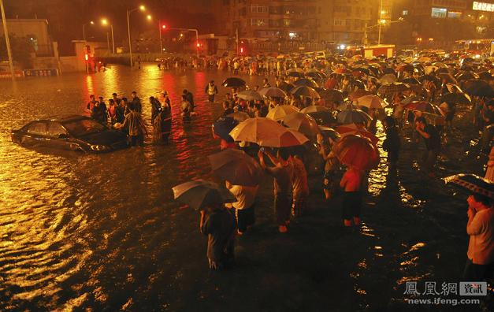
（车被拖出水面）
京港澳高速，光看这名儿，就知道是天朝的交通要道。7月21日当天，这里平均水深4米，最深处6米。【至少有3人】被淹死在这里。
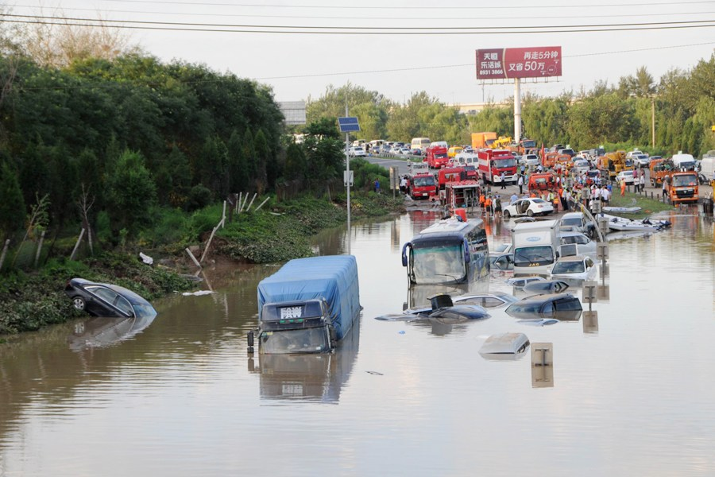
（多辆小轿车“没顶”）
（大客车只剩顶部）
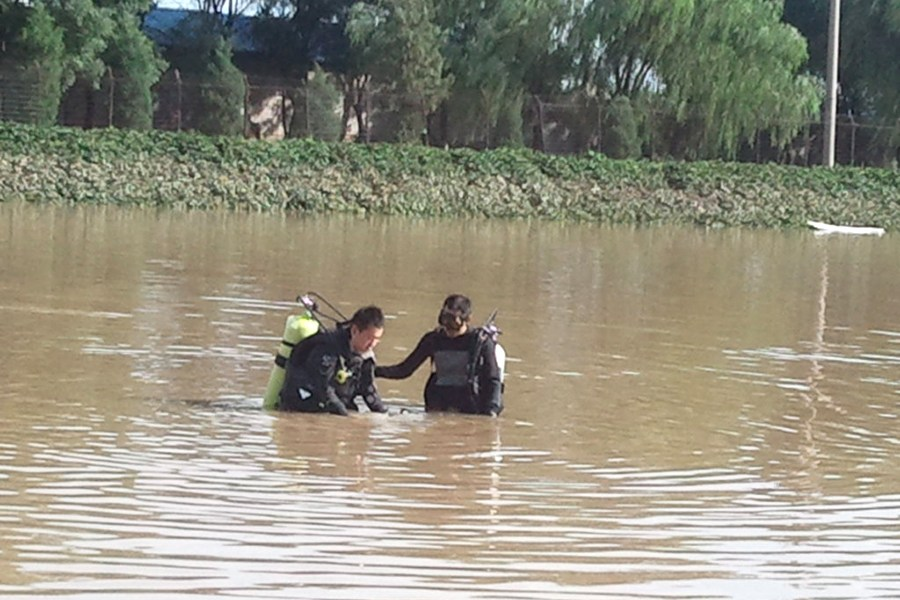
（潜水员下水捞人）
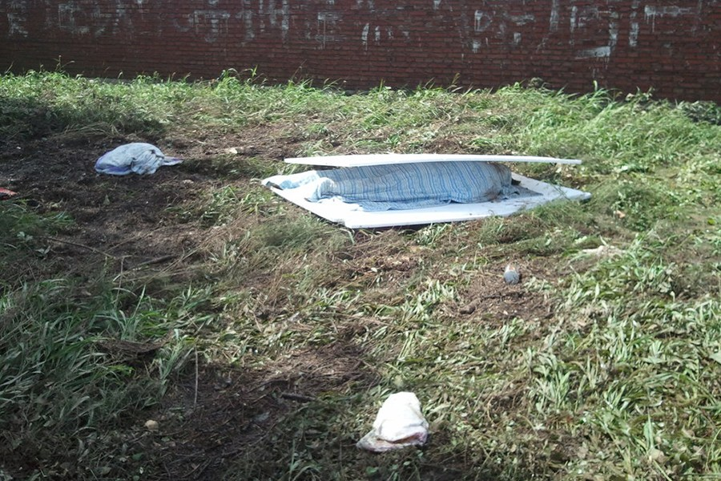
（某遇难者尸体）
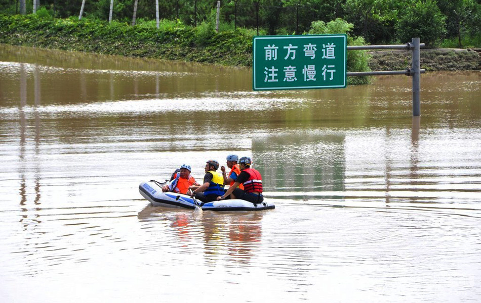
（看看公路标牌就明白水有多深）
房山区算是帝都周边的农村，这次水灾的重灾区。看看照片中房倒屋塌、道路损毁的场面，你不得不怀疑官方的死亡人数是否偏低。
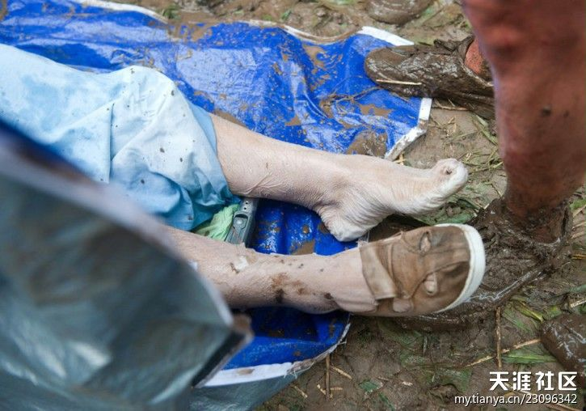
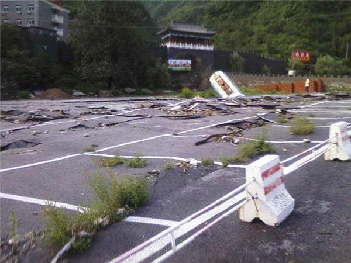
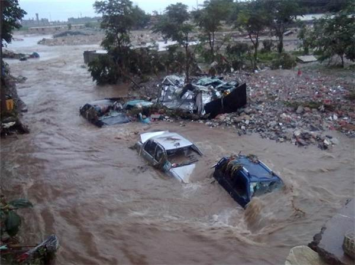
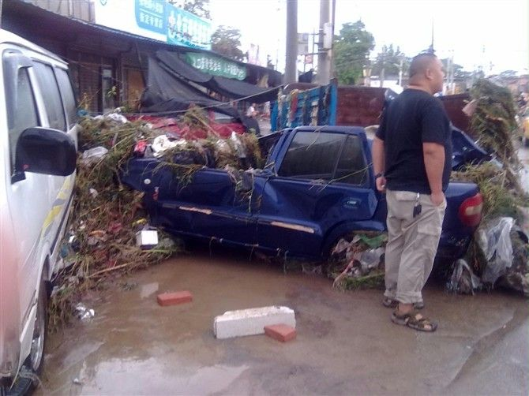
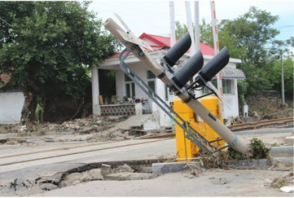
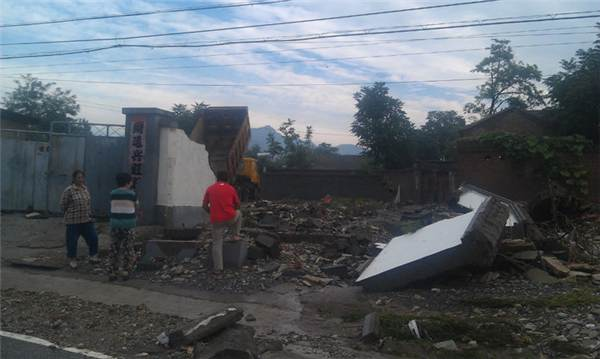
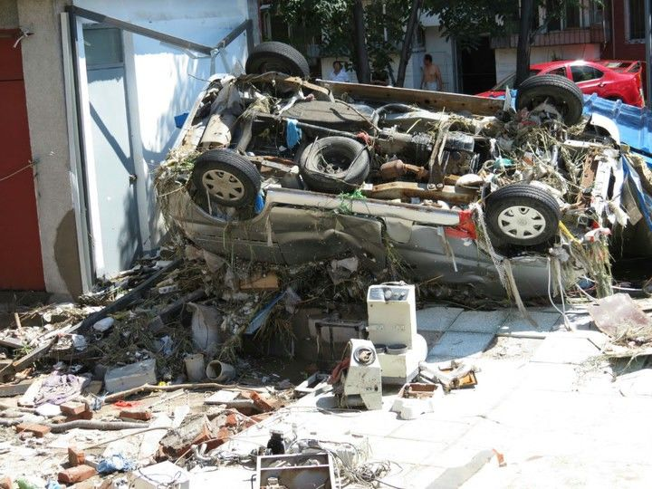
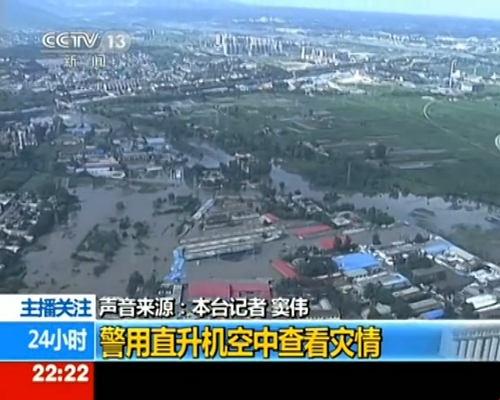
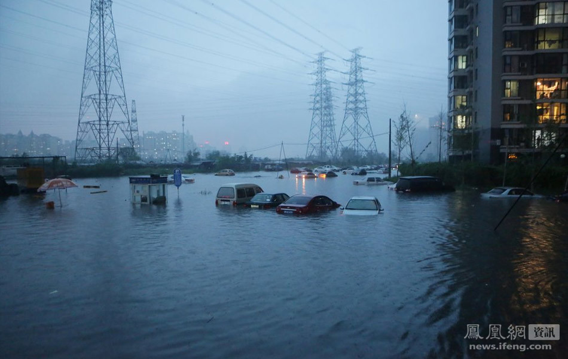
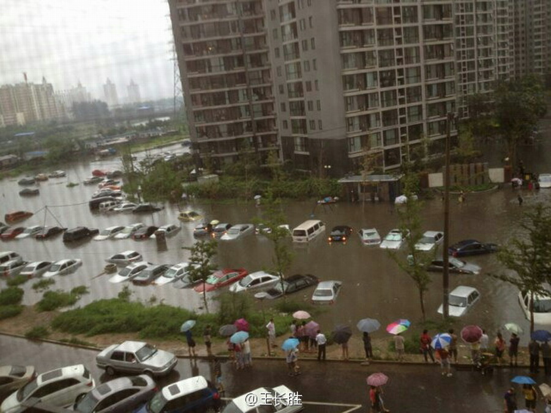
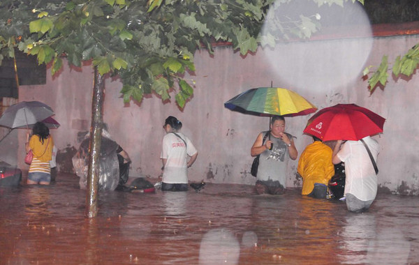
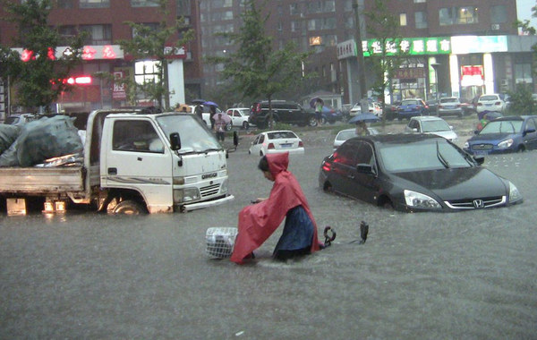
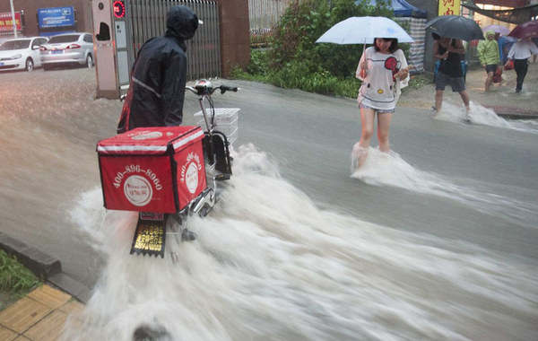
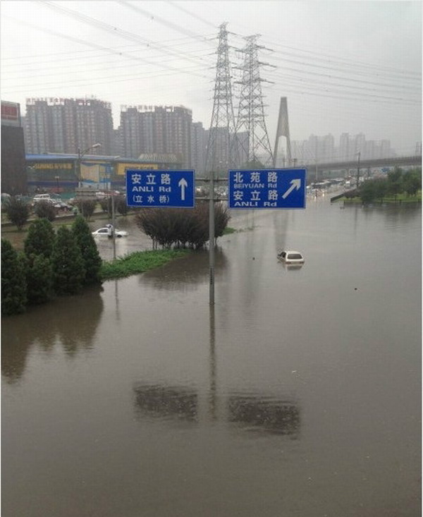
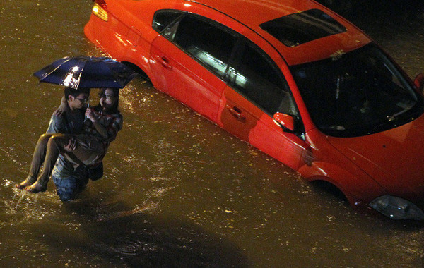
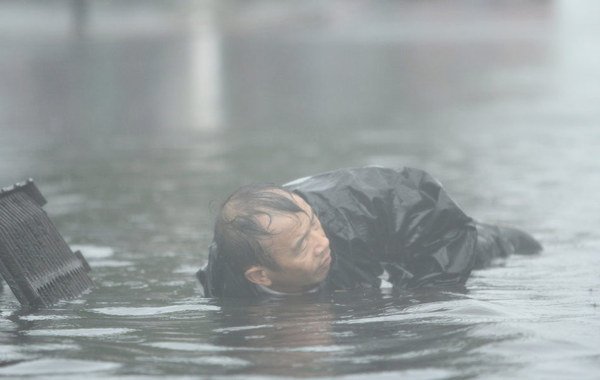
（环卫工人疏通下水道）
（这是某老外在大街上游泳）
（这是某老外在大街上游泳）
水灾发生后不久，真理部（中宣部）就给国内的媒体下达如下指令:
紧接着，那些比较敢说话的报刊，版面纷纷被撤；和报纸撤版相映成趣的是，很多微博客的网友被禁言、被删号。
下面是墙外的报道:
《《南周》《南都》报道北京水灾12版面被"枪毙" @ 法广中文网》
《南方周末八个版在付印前被撤 @ 中国数字时代》
咱天朝政府，应对突发性灾难已经是轻车熟路了。而且我党有一个很牛B的能耐——把丧事办成喜事。不信的话，请看俺前年写的《党国应对灾难的标准操作流程》。
下面，俺来介绍一下，朝廷在这次水灾中的几大谎言。
如果稍微留意一下朝廷喉舌对此次灾难的报道，会发现，官方喉舌惯用的说法是:
真的是60年来最强降雨吗？请看俺转载的链接：
《最强暴雨说法存疑，1963年降雨记录超本次 @ 中国新闻网》
为啥要夸大“天灾”的严重捏？说到底就是为了掩盖【人祸】的责任。这是党国一贯的手法，从“三年大饥荒”以来，就是一直是这么忽悠滴。
顺便说一下：在本次暴雨，紫禁城和北海的团城都【没有】发生内涝（这两处的排水设施是明清两朝留下的）。这更加说明了：本次【水灾的关键不在于降雨量，而在于排水设施】。为了说明这点，顺便也给我党抹黑，俺转发一张很雷人的照片。这是某网友拍摄于北京万寿路（去年新铺的马路）的照片。请注意！这个下水道是【实心的】，只有10公分深，上面放个铁盖子——这玩意儿能排水吗？！
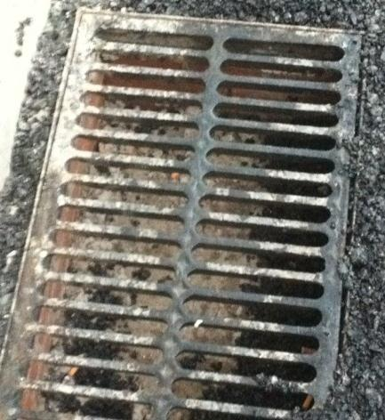
下面是网友对水灾的评论：
下面是网友针对水灾的漫画：
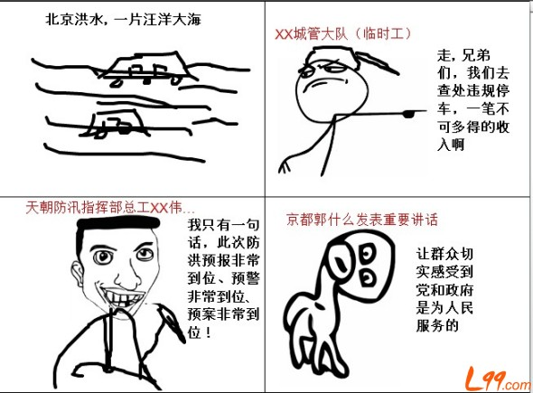
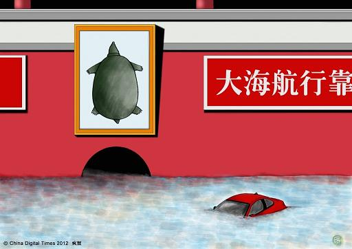
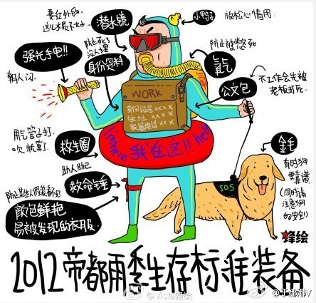
为了给政府脸上贴金，官方喉舌再出雷人之语。
据北京卫视报道：
下面是网友对“高度哥”的评论：
另外，北京防汛指挥部总工刘洪伟，在回答央视主持人提问时，公然声称：

下面是网友对“到位哥”的评论：
我党一向自诩“伟大、光荣、正确”。在“伟光正”的领导下，如果区区一场雨就死好多人，那我党的颜面何在？所以，死亡人数是万万不能多滴。就是在这样的指导思想下，官府对死亡人数，一直遮遮掩掩。
事发次日（22日），只承认37人死亡。在25日的发布会上，朝廷的发言人居然临时改口，避而不谈死亡人数。这可不是俺造谣，请看朝廷喉舌人民网的报道：
《北京25日召开7-21暴雨通报会 发言人念到伤亡人数时改口 @ 人民网》
后来，迫于民间舆论的压力，朝廷在26日把死亡人数调整为77人。那么，77人是真实数据吗？俺分享一篇相关的报道：
《只提禽畜遇害 疑瞒报人命伤亡 京暴雨传逾300死 @ 新浪网》
每当出现重大的灾难，官府都要号召屁民们捐钱。前几年的汶川地震和玉树地址，朝廷确实骗到了好多屁民的血汗钱。
但是自从郭美美揭开了红十字会的遮羞布，如今很多人已经不再上当了。从某种意义上讲，郭美美的功劳大大滴！
下面是几幅网友的漫画：

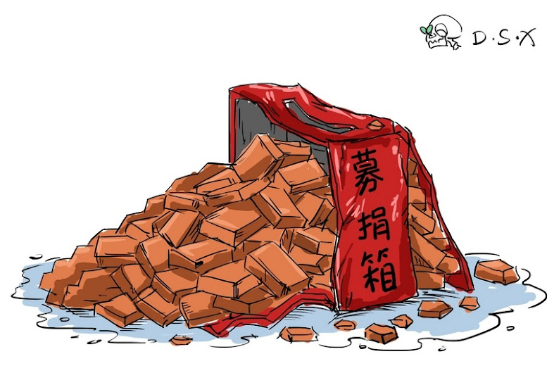
下面是网友对捐款的评论：
正好伦敦奥运开幕了，最后再分享一篇香港《东方日报》的文章：
《京城一片汪洋 洗盡奧運鉛華》
俺博客上，和本文相关的帖子（需翻墙）:
朝廷为何落入“塔西佗陷阱”——天津火灾随想
党国应对灾难的标准操作流程
汇总最近几年天朝的雷人语录
★水灾的照片
分享一些网上找来的照片。（以下照片，如有侵权，敬请告知）
◇广渠门
广渠门可是帝都的闹市区。7月21日当天，这里水深4米。来自江苏的丁先生就在这儿被淹死。某网友讽刺道:
一个风华正茂的私家车主，因一场大雨，竟活活淹死在一个国际大都市的主干道上
（路人望洋兴叹）
（消防队员在拖车）
（北京市民帮忙拖车）
（深水中的消防队员）
（车被拖出水面）
◇京港澳高速
京港澳高速，光看这名儿，就知道是天朝的交通要道。7月21日当天，这里平均水深4米，最深处6米。【至少有3人】被淹死在这里。
（多辆小轿车“没顶”）
（大客车只剩顶部）
（潜水员下水捞人）
（某遇难者尸体）
（看看公路标牌就明白水有多深）
◇房山区
房山区算是帝都周边的农村，这次水灾的重灾区。看看照片中房倒屋塌、道路损毁的场面，你不得不怀疑官方的死亡人数是否偏低。
◇帝都的其它地方
（环卫工人疏通下水道）
（这是某老外在大街上游泳）
（这是某老外在大街上游泳）
★真理部的封锁
水灾发生后不久，真理部（中宣部）就给国内的媒体下达如下指令:
对北京水灾报道要减少数量，要坚持正面报道，不要搞反思性报道和评论。
紧接着，那些比较敢说话的报刊，版面纷纷被撤；和报纸撤版相映成趣的是，很多微博客的网友被禁言、被删号。
下面是墙外的报道:
《《南周》《南都》报道北京水灾12版面被"枪毙" @ 法广中文网》
《南方周末八个版在付印前被撤 @ 中国数字时代》
★朝廷的忽悠
咱天朝政府，应对突发性灾难已经是轻车熟路了。而且我党有一个很牛B的能耐——把丧事办成喜事。不信的话，请看俺前年写的《党国应对灾难的标准操作流程》。
下面，俺来介绍一下，朝廷在这次水灾中的几大谎言。
◇忽悠天灾的严重
如果稍微留意一下朝廷喉舌对此次灾难的报道，会发现，官方喉舌惯用的说法是:
新中国成立以来北京市最大的一次降雨、
六十年来最强的暴雨。
真的是60年来最强降雨吗？请看俺转载的链接：
《最强暴雨说法存疑，1963年降雨记录超本次 @ 中国新闻网》
为啥要夸大“天灾”的严重捏？说到底就是为了掩盖【人祸】的责任。这是党国一贯的手法，从“三年大饥荒”以来，就是一直是这么忽悠滴。
顺便说一下：在本次暴雨，紫禁城和北海的团城都【没有】发生内涝（这两处的排水设施是明清两朝留下的）。这更加说明了：本次【水灾的关键不在于降雨量，而在于排水设施】。为了说明这点，顺便也给我党抹黑，俺转发一张很雷人的照片。这是某网友拍摄于北京万寿路（去年新铺的马路）的照片。请注意！这个下水道是【实心的】，只有10公分深，上面放个铁盖子——这玩意儿能排水吗？！
下面是网友对水灾的评论：
首都下场大雨死那么多同胞，符合逻辑么？
死那么多同胞没人出来道歉，符合逻辑么？
全球纳税最多没钱修下水道，符合逻辑么？
三公消费数千亿却号召募捐，符合逻辑么？
国家出了那么大的事，新闻却集中火力讨论美国枪杀案，符合逻辑么？
当然符合逻辑！因为逻辑分两种：一种是普世逻辑，另一种是天朝特色逻辑！
【大雨来临时的北京精神】
水淹上来要厚德（hold），
救援不到要包容，
逃生手段要创新，
侥幸生还要爱国。
为什么一座四年前才办过史上最成功奥运会的都市，又是GDP全球排名第二的社会主义祖国伟大首都，遇到这大雨整個就癱瘓了。
一天到晚只会修那豪气，雄伟，看得见，可当做政绩的建筑；而看不见却与民生习习相关的下水道，官員什么时候放在眼里了？
关于水灾的原因，北京市排水集团总经理陈明说：“当时的城市建设都是向苏联这样的干燥国家学习的，制定的标准很低且不科学。”
还有哪些是跟苏联学的？经济、教育、制度...
凡不科学且违反人性的，均应一并淸理纠正！
千万别人家早已痛定思痛，回头是岸，我们还当作宝贝，抱住不放，置民众于水深火热之中。
帝都暴雨成灾，根本原因是——下水道缺乏党的正确领导！
1949年后，帝都下水道一直没有成立党组织。既没有下水道党委会，也没有党支部。
党对下水道的领导严重缺失，这是造成此次水灾的主要原因。
建议帝都市委加强党对下水道工作全面领导，确保党的方针政策畅通无阻...
下面是网友针对水灾的漫画：
◇忽悠官员的能干
为了给政府脸上贴金，官方喉舌再出雷人之语。
据北京卫视报道：
北京市民高度肯定北京政府在这次暴雨中的工作。新闻播出后，网友们纷纷发起寻人行动，希望找到名叫“高度”的北京市民。至此，“高度哥”迅速走红网络。
下面是网友对“高度哥”的评论：
开始时幡然醒悟：“原来有位市民叫‘高度’，原来还有很多领导叫‘高度’”。
后来断定：“他是一位领导，经常接受党报采访，也常以市民身份表扬政府。”
据说，该市民常常自掏腰包义无反顾地出现在政府需要他的任何时候任何地点，特别是大灾难大险情之后。
高度兄在我国重名者一定很多，而且经常上电视和报纸。
是很熟，天朝人民从小就经常看见他。
北京卫视！耻辱！北京市民鄙弃你！
北京市民再次被代表被强奸！
北京市民被高度了，还尼玛有地儿说理不？
另外，北京防汛指挥部总工刘洪伟，在回答央视主持人提问时，公然声称：
预报非常到位、预警非常到位、预案非常到位！此言论立刻在网上引来骂声一片，这位刘砖家也荣升“到位哥”。顺便说一下，这位刘总工的雷人言论，已经添加到《汇总最近几年天朝的雷人语录》一文中。
下面是网友对“到位哥”的评论：
37人牺牲得很到位？
都到位了，京石高速上排水的咋没到位？那地方在永定河外边，地势和河床差不多高吧？
早干嘛去了？淹了那么多车？淹死那么多人？！！！！砖家？？狗屁不如！！狗屎一般！！！
三十多个生命换来三个到位
真的让人非常倒胃
无德非常到位
无耻非常到位
无赖非常到位
死人也很到位，37从比美国那12人只多三倍而已。
美国死12人，新闻频道作了专题跟踪。
北京的37人为什么不报道？
腐朽的资本主义死了12个人值得报道，北京的37人呢？
2000年7月22，台湾八掌溪，4名工人被洪水冲走。
事件发生后，台湾“行政院院长”唐飞于24日中午12时宣布辞职，后获留任。
“行政院副院长”游锡堃因此请辞，获准。“警政署长”丁原进、“消防署长”陈弘毅因此请辞，获准。
若是没有什么重大生命财产损失，这么吹嘘标榜一下自己也就算了。
这回死了这么多人，不仅不见反省深思，还在这里当跳梁小丑。
真当老百姓是瞎子么？
不要良心很到位！
一个NB的城市，住着好多NB的人；
一场NB的大雨，管你什么NB，一切都成浮鱼！
◇忽悠死亡的人数
我党一向自诩“伟大、光荣、正确”。在“伟光正”的领导下，如果区区一场雨就死好多人，那我党的颜面何在？所以，死亡人数是万万不能多滴。就是在这样的指导思想下，官府对死亡人数，一直遮遮掩掩。
事发次日（22日），只承认37人死亡。在25日的发布会上，朝廷的发言人居然临时改口，避而不谈死亡人数。这可不是俺造谣，请看朝廷喉舌人民网的报道：
《北京25日召开7-21暴雨通报会 发言人念到伤亡人数时改口 @ 人民网》
后来，迫于民间舆论的压力，朝廷在26日把死亡人数调整为77人。那么，77人是真实数据吗？俺分享一篇相关的报道：
《只提禽畜遇害 疑瞒报人命伤亡 京暴雨传逾300死 @ 新浪网》
◇忽悠屁民的捐款
每当出现重大的灾难，官府都要号召屁民们捐钱。前几年的汶川地震和玉树地址，朝廷确实骗到了好多屁民的血汗钱。
但是自从郭美美揭开了红十字会的遮羞布，如今很多人已经不再上当了。从某种意义上讲，郭美美的功劳大大滴！
下面是几幅网友的漫画：
下面是网友对捐款的评论：
咱一个提着无纺布袋的人，给提爱马仕的人捐款，你不惭愧吗？
一个拿山寨机当手表的人，给戴百达翡丽的人捐款，你不害躁吗？
一个吃碗面条加不加蛋想半天的人，给一餐上万的人捐款，你好意思吗？
一个涨价连夜排队加油的人，给开马杀癞蒂跑车的人捐款，你还要脸吗？
领导，我们不想捐！！！
还记得《让子弹飞》里面汤师爷是怎么说的来着——
得先让豪绅出钱，带着百姓捐钱。豪绅捐了，百姓才跟着捐。钱到手后，豪绅的钱，如数奉还；百姓的钱，三七分账。
你会为北京暴雨捐款么？
今年1月18日，中国向非盟提供6亿美元无偿援助
今年2月下旬，中国援助朝鲜6亿美元
6月7日，向上合成员国提供100亿美元贷款
7月17日，向菲律宾提供1.12亿美元改造供水管道
7月19日，援助非洲200亿美元
7月24日，号召群众为北京暴雨救灾捐款
我要说的话，说完了...
北京市民政局通过微博呼吁民众捐款救灾。
钱没有拿到，却收到满屏的“捐你妹”，无奈之下只好关闭评论。
我猜某些官员心情肯定很复杂，尤其是对郭美美恨得牙根痒痒的。
由此可见，郭美美、卢美美等人用另外一种方式对社会做贡献，功劳不小！
【捐款有没有户口限制？】
请问发起捐款的北京市民政局，没有北京户口可以捐款吗？
在北京纳税不满5年可以捐款吗？
纳税满5年但中间间断过的可以捐款吗？
今天星期二身份证尾号不是2的可以捐款吗？
捐款资格要摇号吗？
外地户口满60岁的老年人可以捐款吗？
不能一有灾难就想让老百姓捐款。
我们税负全球第二，GDP全球第二，公款吃喝每年30000亿，公车消费每年超过1000亿，我们还借给白眼狼菲律宾1.12亿美金。
我们这么个小职工，每天挤公交车苦逼呵呵地上班熬夜做方案被客户当孙子训赚点血汗钱。
现在还要我们捐款，不带这么玩的！
著名经济学家、耶鲁大学陈志武教授一针见血地指出：
“中国的钱美国可以用，非洲可以，朝鲜可以，政府可以，官员可以，富二代可以，官员的二奶也可以，唯独老百姓不能用。”
721暴雨，公交车照常下班，公车照样停在领导家楼下或者机关大院里，收费站照样收费。
而大雨过后，北京市政府出来赈灾募捐了！
【又见号召捐款，想骂人】
导致灾难的原因还没弄清楚，死亡具体名单还没弄清楚，受灾基本情况也还没弄清楚，又开始呼吁募捐了。捐你妹啊！
政府的税收呢？
国库的银子呢？
支援外国的时候好像很有钱吧？
三公消费的时候好像很有钱吧？
贪污腐败的时候也好像很有钱吧？
为何一遇天灾人祸就指望老百姓呢？为何？！
捐.你.妹！
發死人財的畜牲，我把鈔票抹屁股也不捐！
上联：
对外援助减免贷款大笔一挥十分潇洒
下联：
对内逼捐推卸责任贪得无厌一等下流
横批：
捐你妈逼
募捐的微博发出仅仅几个小时后，本局已收到社会各界的踊跃捐助，再一次展示了社会主义国家的优越性。
据不完全统计已收到“你妹”上万件，远在大洋彼岸的国际友人紧急捐赠“草泥马”数千件。
记者截稿前，仍有大量“你妹”不断捐来...
近一个月，
向IMF注资430亿美元，
再次援助上合组织国家100亿美元贷款，
无偿援助阿富汗1.5亿元，
中非论坛援助非洲200亿美元，
免除越南到期500亿美元贷款，
共计1230多亿美元，比2012年中国军费预算还要多！
但前脚刚撒完钱，后脚就号召捐款。
二逼们真把苦逼当傻逼么？倒！捐你妹的！
一受灾就呼吁甚至强行要老百姓捐款。
百姓看不起病等死的时候，官府凭什么就放任不管！
我就不懂了，官府捐助非洲动辄几十几百亿，免除越南等国巨额债务眼皮都不眨一下。
怎么国内受灾了就没钱了？就需要社会伸出援助之手了？
这时候捐款正是党员带头的好时候。
必须有党政机关的领导带头捐，把吃进去的赃款怎么吃的就怎么吐出来~
当然，吐出来我也不捐！
你们先把那些海外欠款都要回来，那些钱够够的了！！
捐！和我互粉的ID，谁捐我取消谁！捐你妹啊！
北京市民高度赞扬政府的诈骗行为，纷纷表示要向捐你妹同志学习，迎接第十八个被代表大会的到来！
如果可以，请抵制【北京7.21特大自然灾害救灾捐款活动】。
不是我们没爱心，是你们太让我们心寒！
7.21暴雨过后，天朝上下一片歌功颂德，甚至无人鞠躬致歉！
汶川地震捐款数亿，贪污腐败随处可见！
7.23动车事故不到一年，下马官员纷纷换装上任...
如此天朝，百姓岂能捐款？最终只会肥了腐败官僚的腰包！
最近一个月，祖国给菲律宾放贷款，给朝鲜送援助，给非洲免债务，给美国送现钞，共计1230多亿美元。祖国多伟大啊！
想想活了怎么多年，没能为祖国、为ZF做点什么。每思及此，伤心欲绝。
现在祖国CALL我捐款，肿么办？
看 @北京市民政局 的微博评论太他妈欢乐了。大半夜的要那么提神吗？笑抽了...清一色的捐你妹！
正好伦敦奥运开幕了，最后再分享一篇香港《东方日报》的文章：
《京城一片汪洋 洗盡奧運鉛華》
俺博客上，和本文相关的帖子（需翻墙）:
朝廷为何落入“塔西佗陷阱”——天津火灾随想
党国应对灾难的标准操作流程
汇总最近几年天朝的雷人语录
版权声明
本博客所有的原创文章，作者皆保留版权。转载必须包含本声明，保持本文完整，并以超链接形式注明作者编程随想和本文原始地址：
https://program-think.blogspot.com/2012/07/weekly-share-14.html
本博客所有的原创文章，作者皆保留版权。转载必须包含本声明，保持本文完整，并以超链接形式注明作者编程随想和本文原始地址：
https://program-think.blogspot.com/2012/07/weekly-share-14.html